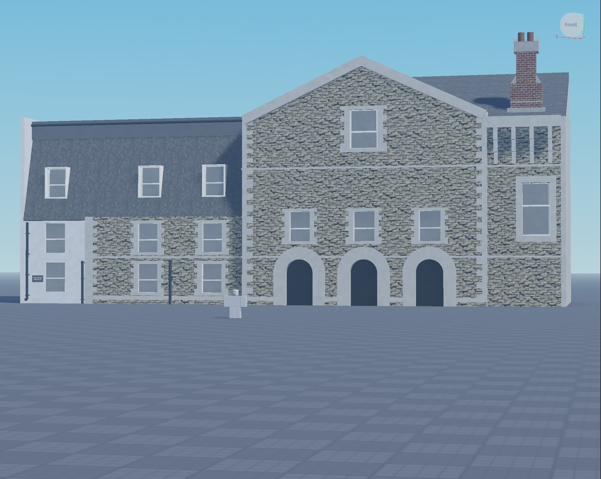
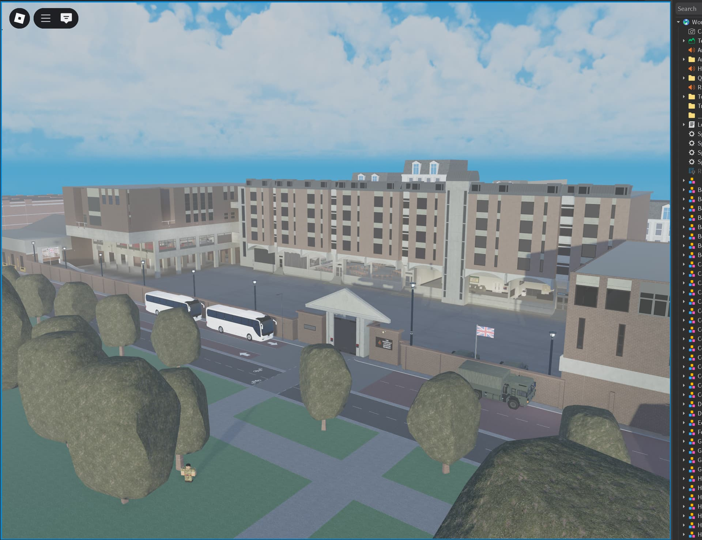
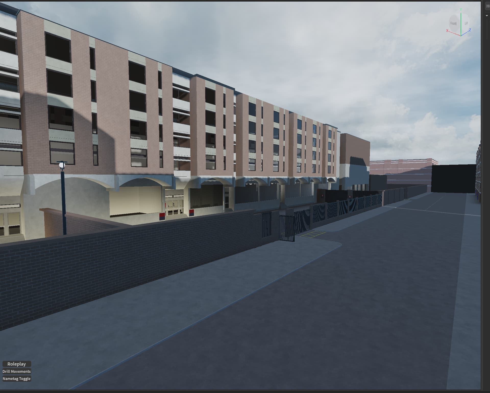
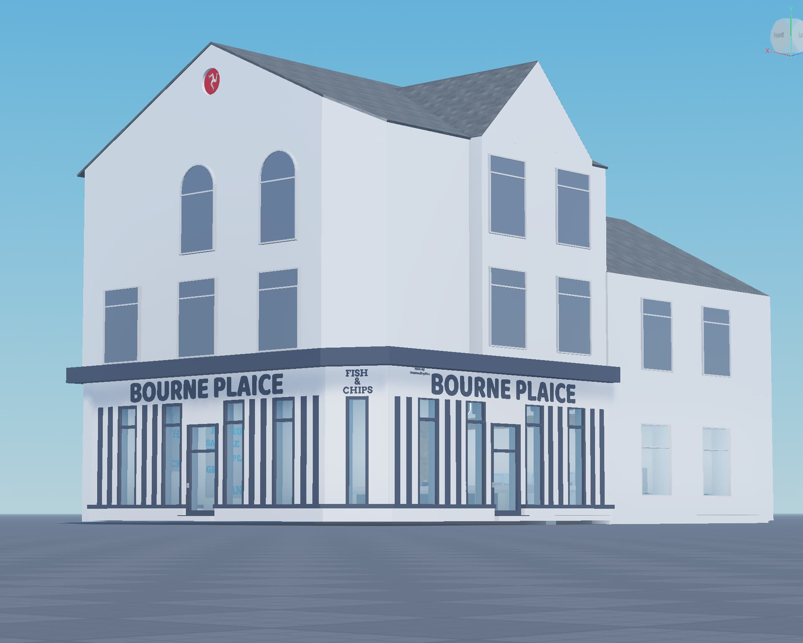
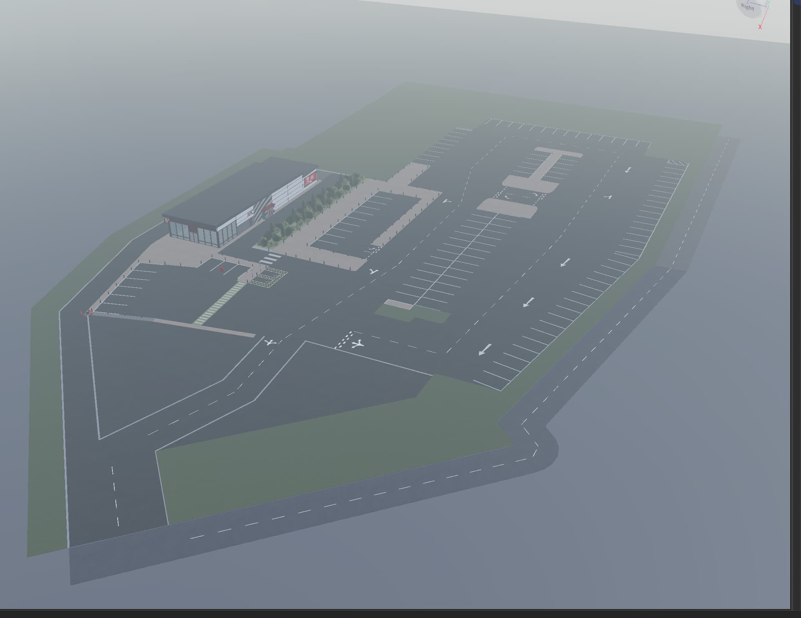
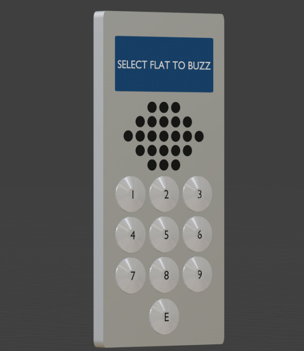
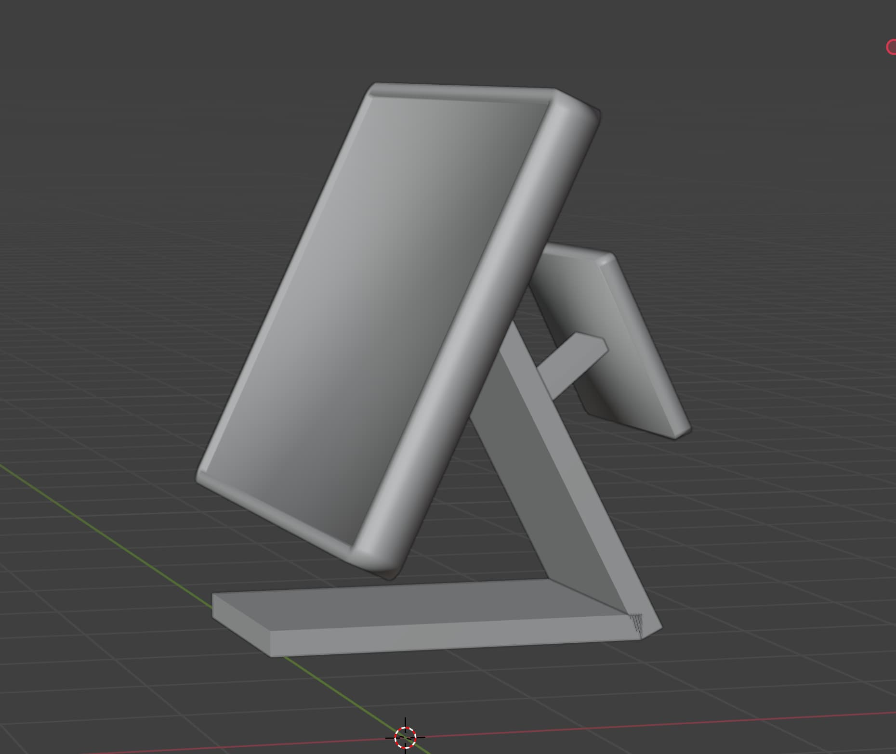

Portfolio
A selection of commissioned and personal Roblox development work.
Building
Porth Veor Manor
Real-world inspired manor build with accurate proportions.
BuildingKnightsbridge Barracks
 There have been claims that this work is based on Sov’s version; however, these claims are incorrect. The design and layout were independently developed and are entirely original.
BuildingQuick & Custom Chip Shop
Built in approximately 45 minutes, this low-detail chip shop is based on a real location in my local area. Although a quick project, it successfully captures the overall atmosphere of the original.
• Building
Custom KFC Service Station
Custom KFC service station build with accurate proportions and details.
• Building
Animation
MDT Animation
Custom MDT interaction animations.
AnimationCustom ILB (Inshore Lifeboat) Animations
While the boat model was sourced from an RNLI game, all animations were created independently by me.
Animation3D Modelling
Flat/Apartment Buzzer
Custom 3D model of a flat/apartment buzzer.
Blender ModellingPoint of Sale System
Custom-designed Point of Sale system, optimized for roleplay servers and smooth user experience.
3D Modeling